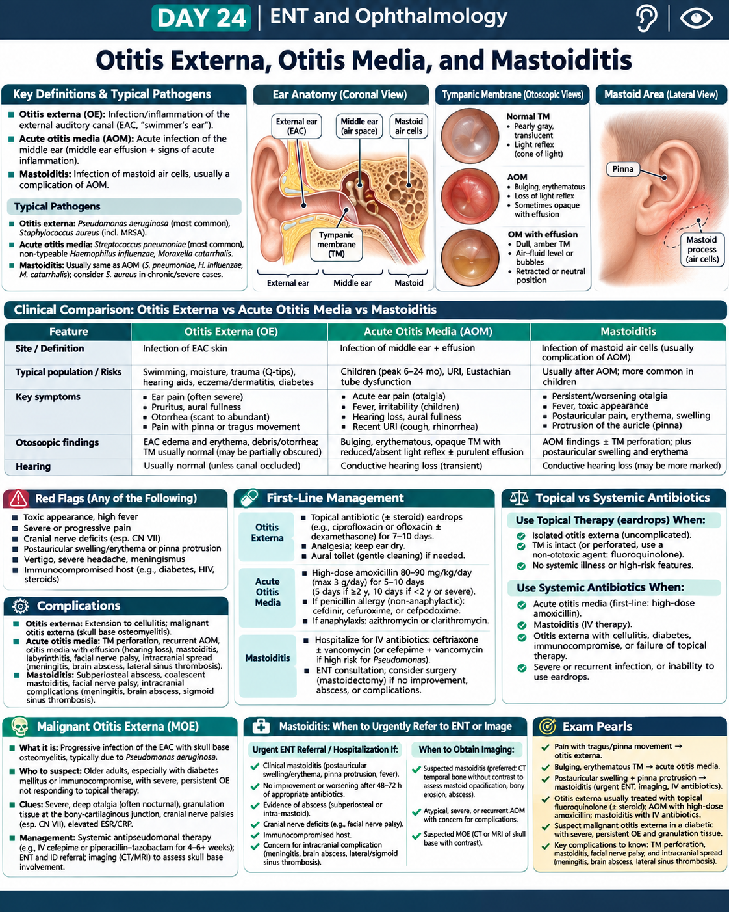
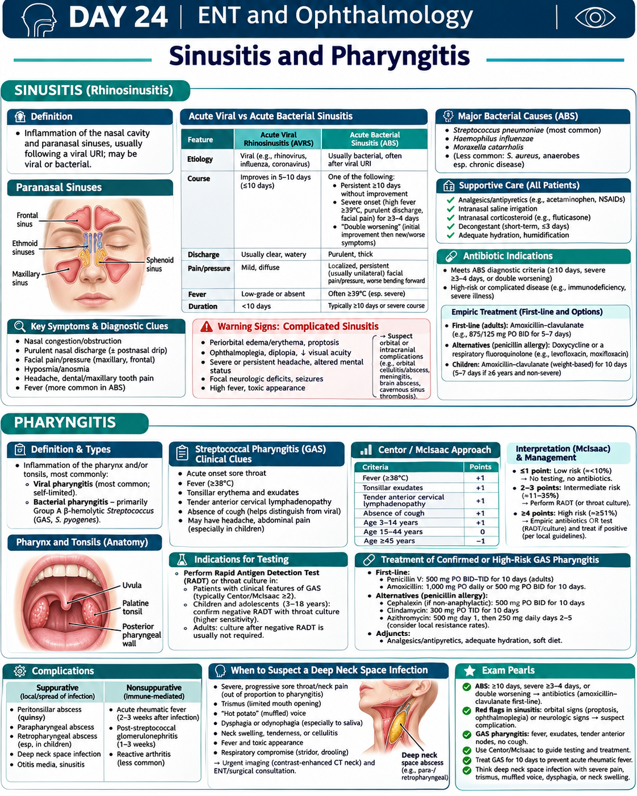
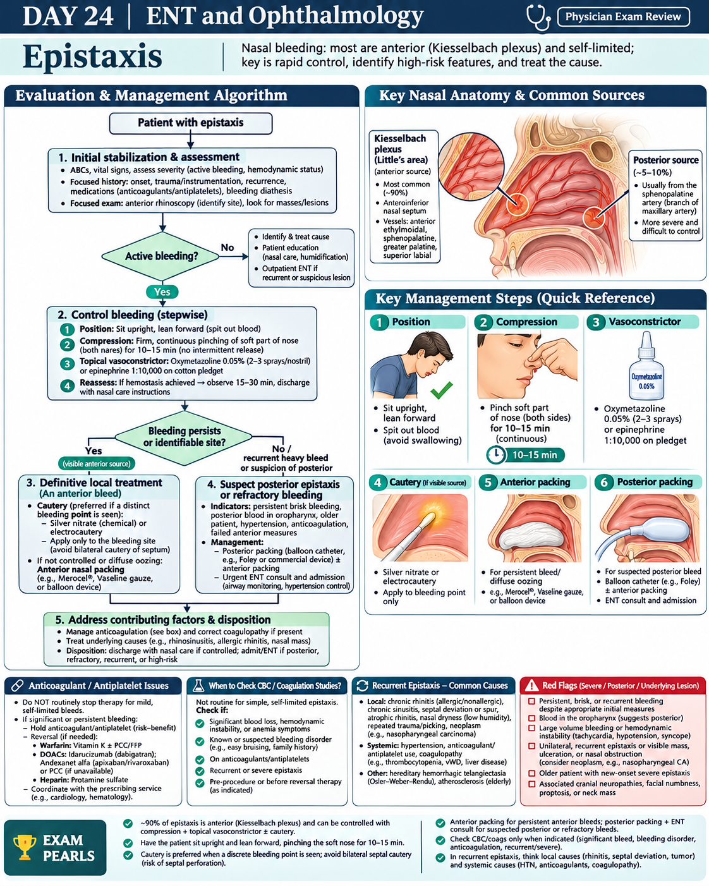
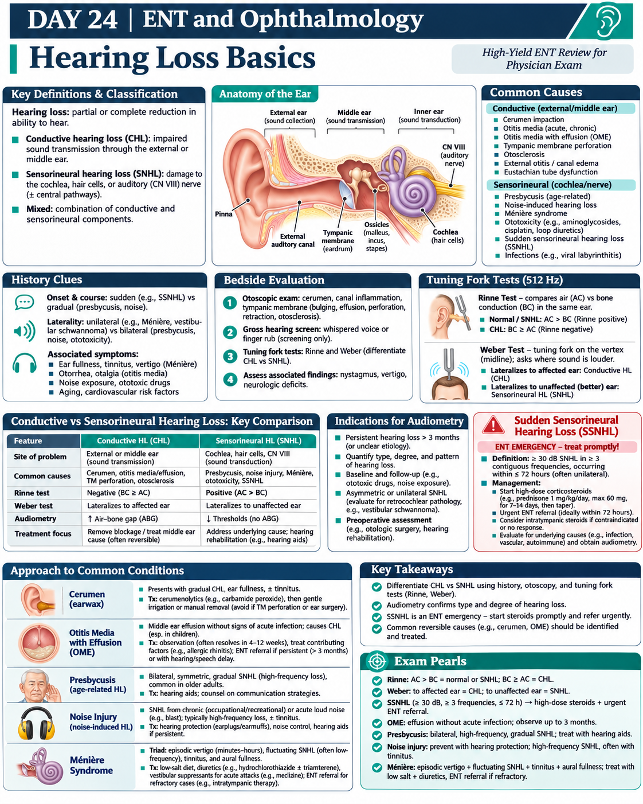
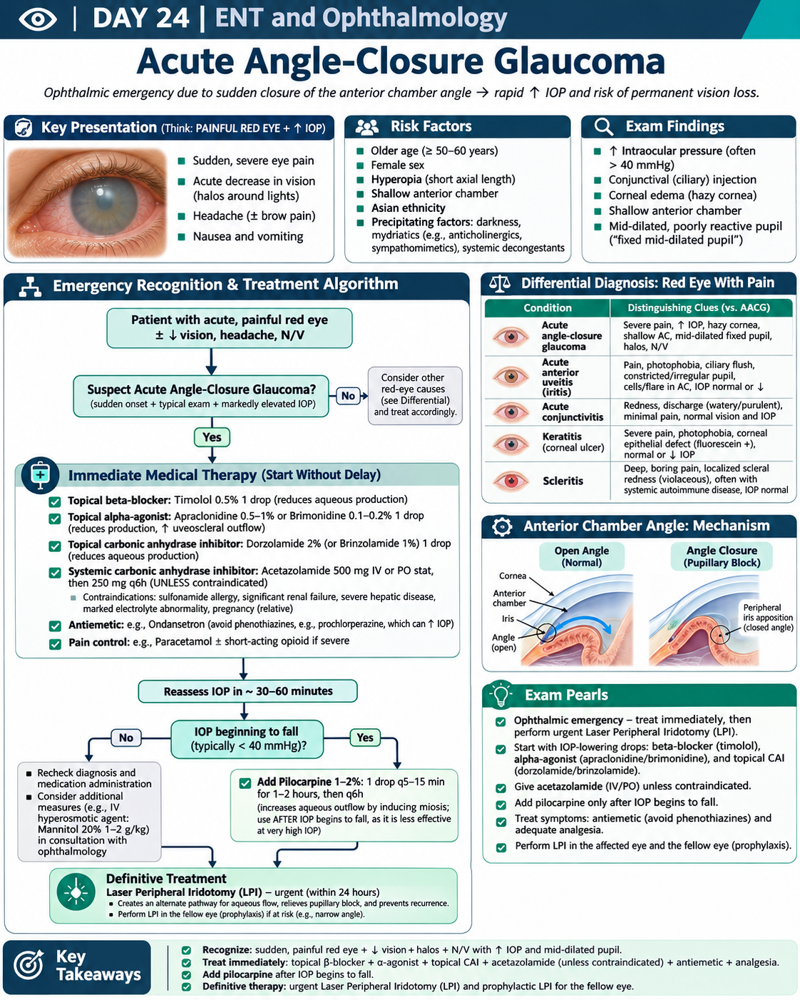
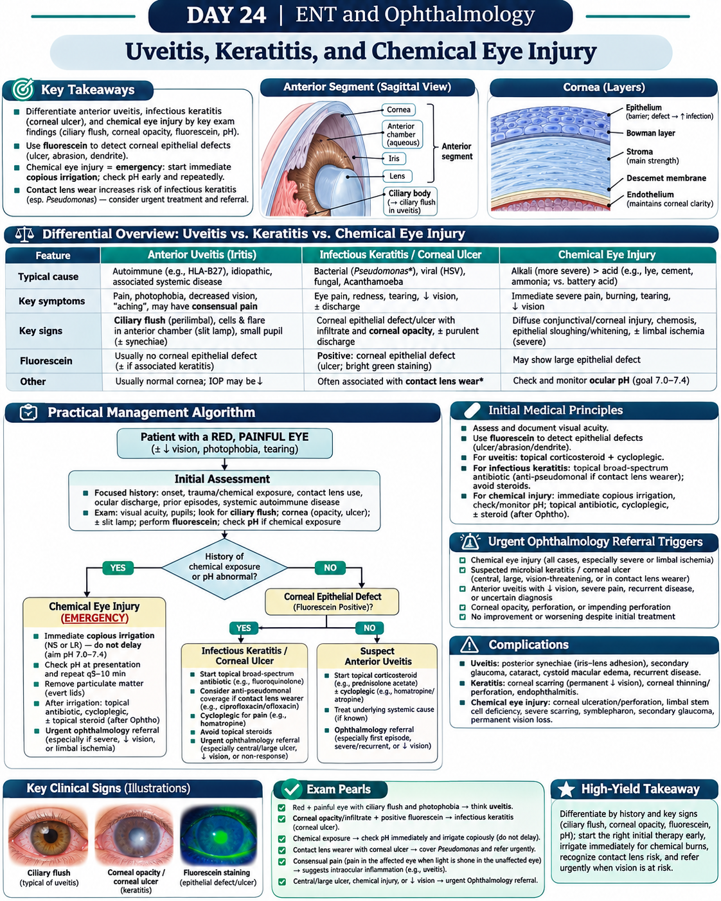

Day 24 — ENT & Ophthalmology
Physician-level DOH exam review of common ENT infections and emergencies, hearing loss, red-eye triage, acute angle-closure glaucoma, sudden monocular visual loss, retinal detachment, uveitis, keratitis and chemical eye injury. Each topic integrates diagnostic reasoning, management, red flags, one dedicated visual and 10 original clinical questions.
Otitis externa / otitis media / mastoiditis
Differentiate external-ear, middle-ear and mastoid infection; know when topical therapy is enough and when IV antibiotics/ENT escalation are required.
Recognition & key findings
- Otitis externa (OE): tragal/pinna tenderness, edematous erythematous canal, otorrhea; tympanic membrane may be hard to visualize. Pseudomonas and S. aureus predominate.
- Acute otitis media (AOM): acute symptoms plus middle-ear effusion and inflammatory TM findings—classically a bulging, opaque/erythematous tympanic membrane with reduced mobility.
- Mastoiditis: fever, persistent otalgia, postauricular erythema/swelling/tenderness and pinna protrusion, usually after AOM.
Management
- Uncomplicated OE: aural toilet when needed, analgesia and topical antibiotic ± steroid. Use a non-ototoxic fluoroquinolone drop if TM perforation is possible.
- AOM: analgesia for all; antibiotic decision depends on age, severity and diagnostic certainty. Amoxicillin is typical first-line when antibiotics are indicated; amoxicillin-clavulanate for selected resistant-risk/recent amoxicillin cases.
- Mastoiditis: hospitalize, IV antibiotics and urgent ENT review; CT temporal bone if complications/diagnostic uncertainty; surgery if abscess, intracranial complication or poor response.
Must-not-miss
- Malignant (necrotizing) OE: severe persistent otalgia, granulation tissue, diabetes/immunocompromise, possible CN palsy → urgent ENT, imaging and systemic antipseudomonal therapy.
- Mastoiditis complications include subperiosteal abscess, facial nerve palsy, meningitis, brain abscess and venous sinus thrombosis.
Exam traps
- Pain with tragus/pinna manipulation strongly favors OE, not AOM.
- A bulging TM is more specific for AOM than simple erythema.
- Postauricular swelling with pinna protrusion after AOM = mastoiditis until proven otherwise.
🖼️ Study visual — Otitis Externa, Otitis Media & Mastoiditis
Dedicated Day 24 topic visual.
Use the centered preview for review; open full size when you want to read every label.
Rapid review
High-yield recall points for otitis externa / otitis media / mastoiditis.
📚 Guidelines & Academic Sources
Local institutional policy and current DoH Abu Dhabi requirements take precedence where they differ from international guidance.
My additions / weak points
Sinusitis and pharyngitis
Separate viral from bacterial sinusitis and use a test-directed approach to streptococcal pharyngitis rather than reflex antibiotics.
Acute bacterial rhinosinusitis (ABRS) criteria
- Consider ABRS with persistent symptoms ≥10 days without improvement, severe onset (high fever with purulent discharge/facial pain for several days), or double worsening after initial improvement.
- Routine imaging is not needed for uncomplicated acute sinusitis; CT is reserved for suspected orbital/intracranial complication or alternative diagnosis.
Sinusitis management
- Supportive care: analgesia, saline irrigation and intranasal corticosteroid when appropriate.
- For uncomplicated ABRS requiring antibiotics, amoxicillin-clavulanate is a common first-line option; reassess if worsening or not improving.
- Orbital pain/swelling, ophthalmoplegia, proptosis, visual change, severe headache or neurologic deficit → urgent imaging/ENT/ophthalmology.
Pharyngitis approach
- Viral clues: cough, rhinorrhea, hoarseness, oral ulcers/conjunctivitis. GAS clues: fever, tonsillar exudate, tender anterior cervical nodes and absence of cough.
- Use Centor/McIsaac-style risk assessment to guide testing; confirm suspected GAS with rapid antigen testing ± throat culture according to age/local protocol.
- Confirmed GAS: penicillin or amoxicillin first-line in most patients; treat to prevent suppurative complications and acute rheumatic fever.
Deep neck infection red flags
- Trismus, muffled “hot-potato” voice, drooling, neck swelling/stiffness, toxic appearance, dysphagia/odynophagia out of proportion, or respiratory distress require urgent ENT evaluation and imaging/airway planning as indicated.
🖼️ Study visual — Sinusitis & Pharyngitis
Dedicated Day 24 topic visual.
Use the centered preview for review; open full size when you want to read every label.
Rapid review
High-yield recall points for sinusitis and pharyngitis.
📚 Guidelines & Academic Sources
Local institutional policy and current DoH Abu Dhabi requirements take precedence where they differ from international guidance.
My additions / weak points
Peritonsillar abscess and epiglottitis
Recognize unilateral deep oropharyngeal infection and the airway-first presentation of epiglottitis.
Airway first
- Epiglottitis can progress rapidly to complete obstruction. Drooling, tripod positioning, stridor, severe dysphagia and toxic appearance require immediate controlled airway planning with ENT/anesthesia.
- Do not agitate the patient or perform unnecessary throat manipulation when epiglottitis is strongly suspected.
Peritonsillar abscess (PTA)
- Typical clues: severe unilateral sore throat, muffled voice, trismus, unilateral peritonsillar bulge and uvular deviation away from the abscess.
- Diagnosis is usually clinical; ultrasound or CT can help when uncertain or deeper infection is suspected.
- Treatment generally combines drainage (needle aspiration or incision/drainage) plus antibiotics covering GAS and oral anaerobes.
Epiglottitis treatment
- After airway is secured/controlled: IV broad-spectrum antibiotics, commonly a third-generation cephalosporin plus anti-staphylococcal coverage depending on severity/local epidemiology.
- ICU-level monitoring is appropriate in significant airway disease.
Differentiate
- Severe tonsillitis: bilateral tonsillar inflammation/exudates without trismus or focal peritonsillar bulge.
- Retropharyngeal/deep neck infection: neck stiffness/swelling, dysphagia, toxic appearance → contrast CT if stable enough and urgent ENT review.
🖼️ Study visual — Peritonsillar Abscess & Epiglottitis Algorithm
Dedicated Day 24 topic visual.
Use the centered preview for review; open full size when you want to read every label.
Rapid review
High-yield recall points for peritonsillar abscess and epiglottitis.
📚 Guidelines & Academic Sources
Local institutional policy and current DoH Abu Dhabi requirements take precedence where they differ from international guidance.
My additions / weak points
Epistaxis
Use a stepwise approach: compression first, local vasoconstriction, targeted cautery/packing, then recognize posterior or high-risk bleeding.
Initial management
- Assess ABCs and hemodynamic status; sit the patient upright and lean forward.
- Apply firm continuous compression to the soft part of the nose for 10–15 minutes without repeated release.
- Topical oxymetazoline or other vasoconstrictor can improve hemostasis when appropriate.
Persistent anterior bleeding
- If a discrete anterior source is seen, silver nitrate or electrocautery may be used; avoid indiscriminate bilateral septal cautery because of perforation risk.
- If diffuse or persistent, use anterior nasal packing and arrange appropriate follow-up.
Posterior/high-risk epistaxis
- Suspect posterior bleeding with brisk hemorrhage, blood into the oropharynx, older/hypertensive patient, failure of anterior measures or inability to visualize the source.
- Posterior packing requires monitoring and urgent ENT involvement; refractory bleeding may need arterial ligation or embolization.
Anticoagulants & testing
- Do not automatically stop anticoagulants for mild self-limited bleeding; individualize based on severity and thrombotic risk.
- CBC/coagulation studies are useful with significant blood loss, recurrent/severe bleeding, suspected coagulopathy or anticoagulant use—not every simple nosebleed.
🖼️ Study visual — Epistaxis Evaluation & Management
Dedicated Day 24 topic visual.
Use the centered preview for review; open full size when you want to read every label.
Rapid review
High-yield recall points for epistaxis.
📚 Guidelines & Academic Sources
Local institutional policy and current DoH Abu Dhabi requirements take precedence where they differ from international guidance.
My additions / weak points
Hearing loss basics
Differentiate conductive from sensorineural loss at the bedside and never miss sudden sensorineural hearing loss.
Conductive vs sensorineural
- Conductive: external/middle ear problem—cerumen, OE, AOM/OME, perforation, otosclerosis.
- Sensorineural: cochlea/CN VIII—presbycusis, noise, ototoxic drugs, Ménière disease, vestibular schwannoma, sudden SNHL.
Rinne & Weber
- Normal/SNHL: Rinne positive (air conduction > bone conduction). Conductive loss: Rinne negative on affected side.
- Weber lateralizes to the affected ear in conductive loss and to the better ear in sensorineural loss.
Sudden sensorineural hearing loss (SSNHL)
- Sudden unilateral SNHL over ≤72 hours is an ENT emergency. Obtain urgent audiometry and ENT assessment; corticosteroids are commonly offered when not contraindicated.
- Do not mistake a “blocked ear” sensation for benign cerumen until conductive loss has been confirmed.
Common causes
- Presbycusis: bilateral symmetric high-frequency SNHL.
- Ménière disease: episodic vertigo + fluctuating SNHL + tinnitus/aural fullness.
- Noise injury: high-frequency SNHL; emphasize hearing protection.
🖼️ Study visual — Hearing Loss Basics
Dedicated Day 24 topic visual.
Use the centered preview for review; open full size when you want to read every label.
Rapid review
High-yield recall points for hearing loss basics.
📚 Guidelines & Academic Sources
Local institutional policy and current DoH Abu Dhabi requirements take precedence where they differ from international guidance.
My additions / weak points
Red eye differential
Use pain, vision, photophobia, pupil findings, fluorescein staining and IOP to separate benign red eye from vision-threatening disease.
Immediate referral triggers
- New/significant visual loss, moderate–severe pain, marked photophobia, corneal opacity/ulcer, positive fluorescein defect in a contact-lens wearer, abnormal fixed/mid-dilated pupil, markedly elevated IOP, trauma/chemical exposure or suspected scleritis.
Pattern recognition
- Conjunctivitis: discharge/itching, minimal pain, normal vision and pupil.
- Keratitis/corneal ulcer: pain, photophobia, corneal opacity or fluorescein staining, contact lens risk.
- Anterior uveitis: ciliary flush, photophobia/consensual pain, constricted/irregular pupil.
- Angle closure: severe pain, headache/N/V, cloudy cornea, fixed mid-dilated pupil, high IOP.
Less dangerous patterns
- Subconjunctival hemorrhage: sharply demarcated blood patch, painless, normal vision.
- Episcleritis: mild discomfort, sectoral superficial redness; often self-limited.
- Scleritis: deep boring pain and violaceous redness—often systemic autoimmune association and urgent ophthalmology.
Exam sequence
- Always document visual acuity first, then pupils, cornea/fluorescein, pattern of injection, discharge, contact-lens/trauma history and IOP when safe and available.
🖼️ Study visual — Red Eye Differential
Dedicated Day 24 topic visual.
Use the centered preview for review; open full size when you want to read every label.
Rapid review
High-yield recall points for red eye differential.
📚 Guidelines & Academic Sources
Local institutional policy and current DoH Abu Dhabi requirements take precedence where they differ from international guidance.
My additions / weak points
Acute angle-closure glaucoma
Rapidly lower intraocular pressure, control symptoms and arrange definitive iridotomy—do not treat this like routine conjunctivitis.
Classic presentation
- Sudden severe painful red eye, blurred vision/halos, headache, nausea/vomiting, corneal edema and a mid-dilated poorly reactive pupil.
- Risk factors include older age, female sex, hyperopia, shallow anterior chamber, Asian/Inuit ancestry and precipitating mydriasis.
Immediate treatment principles
- Urgent ophthalmology consultation. Lower IOP promptly with topical aqueous suppressants (e.g., beta-blocker, alpha-agonist, topical carbonic anhydrase inhibitor) plus systemic acetazolamide if not contraindicated.
- Pilocarpine is typically added after IOP begins to fall, because an ischemic iris may initially respond poorly at very high pressure.
Definitive therapy
- Laser peripheral iridotomy (LPI) is definitive for pupillary-block angle closure once the acute crisis is controlled.
- The fellow phakic eye often needs prophylactic LPI because its risk of future closure is high.
Important contraindication checks
- Avoid/modify acetazolamide in severe renal/hepatic disease or major electrolyte derangement; tailor agents to cardiac/pulmonary comorbidity.
- Differentiate from uveitis, keratitis and scleritis using pupil, cornea, fluorescein and IOP findings.
🖼️ Study visual — Acute Angle-Closure Glaucoma Algorithm
Dedicated Day 24 topic visual.
Use the centered preview for review; open full size when you want to read every label.
Rapid review
High-yield recall points for acute angle-closure glaucoma.
📚 Guidelines & Academic Sources
Local institutional policy and current DoH Abu Dhabi requirements take precedence where they differ from international guidance.
My additions / weak points
Retinal detachment and sudden visual loss
Approach acute monocular visual loss by pain, field pattern, pupillary defect and fundus findings; retinal arterial occlusion also triggers stroke evaluation.
Retinal detachment
- Classic symptoms: new flashes (photopsia), floaters and a “curtain/shadow” or peripheral field defect; usually painless.
- Urgent same-day ophthalmology is required. If fundus cannot be visualized, ocular ultrasound can help detect detachment in trained hands.
Retinal artery occlusion
- Sudden profound painless monocular loss; may show retinal whitening/cherry-red spot.
- Treat as an ocular stroke: immediate stroke-center/ED referral for systemic vascular evaluation. In patients >50, evaluate for giant cell arteritis when clinically suspected.
Other sudden visual loss
- RVO: painless subacute loss with diffuse retinal hemorrhages/venous dilation; assess systemic HTN, diabetes and lipids.
- Vitreous hemorrhage: hazy vision/floaters with obscured fundus.
- Optic neuritis: pain with eye movement, color desaturation and RAPD, often younger patient.
Exam pearls
- Test each eye separately. Document acuity, pupils/RAPD, visual fields and fundus if visible.
- A new RAPD suggests significant optic nerve or extensive retinal dysfunction.
🖼️ Study visual — Retinal Detachment & Sudden Visual Loss
Dedicated Day 24 topic visual.
Use the centered preview for review; open full size when you want to read every label.
Rapid review
High-yield recall points for retinal detachment and sudden visual loss.
📚 Guidelines & Academic Sources
Local institutional policy and current DoH Abu Dhabi requirements take precedence where they differ from international guidance.
My additions / weak points
Uveitis, keratitis and chemical eye injury
Separate anterior uveitis from infectious corneal disease and immediately irrigate chemical injuries before doing anything else.
Anterior uveitis
- Pain, photophobia (often consensual), ciliary flush, small/irregular pupil and anterior chamber cells/flare.
- Topical corticosteroid and cycloplegic therapy are typically used under ophthalmology guidance; investigate recurrent/bilateral disease for systemic causes.
Infectious keratitis / corneal ulcer
- Painful red eye, photophobia, reduced vision, corneal infiltrate/opacity and fluorescein-positive epithelial defect. Contact lens wear strongly raises concern for Pseudomonas.
- Urgent ophthalmology; start appropriate topical broad-spectrum/antipseudomonal antibiotic. Avoid topical steroids unless directed by ophthalmology.
Chemical eye injury
- Irrigate immediately and copiously with saline, lactated Ringer’s or water if that is what is available—do not delay for visual acuity or history.
- Remove particulate matter and continue irrigation until ocular pH is near physiologic and remains stable; then urgent ophthalmology assessment.
- Alkali burns generally penetrate more deeply than acid burns.
Complications
- Uveitis: synechiae, glaucoma, cataract, cystoid macular edema.
- Keratitis: scarring, thinning/perforation, endophthalmitis.
- Chemical injury: limbal stem-cell deficiency, symblepharon, glaucoma and permanent vision loss.
🖼️ Study visual — Uveitis, Keratitis & Chemical Eye Injury
Dedicated Day 24 topic visual.
Use the centered preview for review; open full size when you want to read every label.
Rapid review
High-yield recall points for uveitis, keratitis and chemical eye injury.
📚 Guidelines & Academic Sources
Local institutional policy and current DoH Abu Dhabi requirements take precedence where they differ from international guidance.
My additions / weak points
External QBank tracker
Record your ENT/Ophthalmology question block for Day 24.